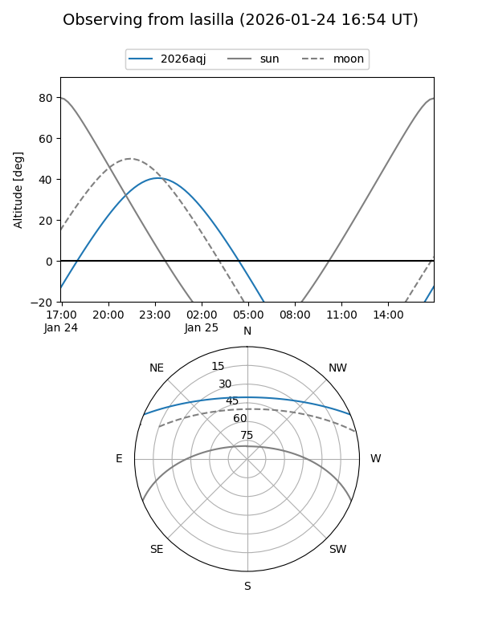
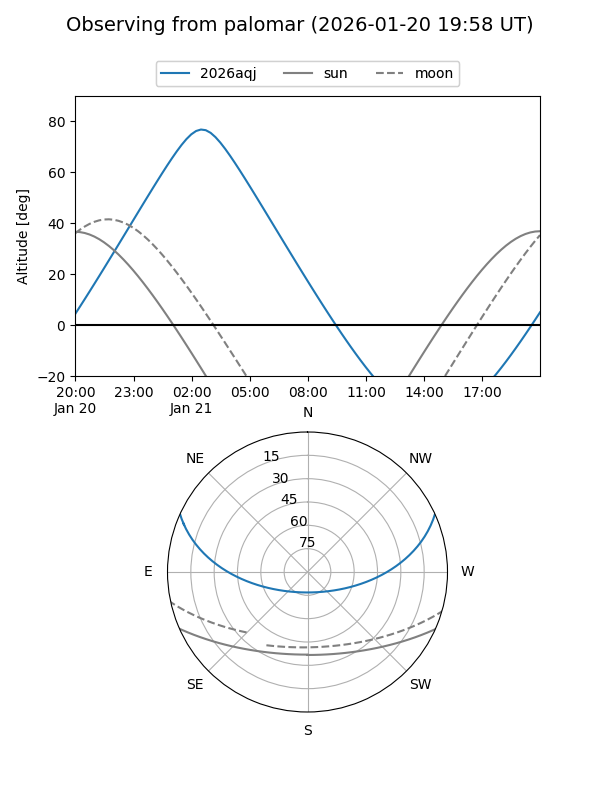
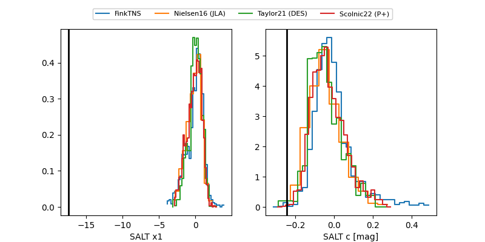

2026aqj
Target 2026aqj at 2026-01-27 03:41
Aliases and brokers:
FINK: link
Lasair: link
ALeRCE: link
TNS: link
YSE: link
alt names
ZTF26aabzhrq (ztf,fink_ztf)
2026aqj (tns,yse)
ATLAS26axh (atlas)
PS26kq (panstarrs)
Coordinates:
equatorial (ra, dec) = 41.1445,+20.08762
equatorial (HMS+DMS) = 02:44:34.69,+20:05:15.43
galactic (l, b) = (156.0278,-35.41106)
Flags:
Photometry:
last ztfg=18.22, ztfr=18.21
3 ztfg, 3 ztfr detections
Lightcurve

Visibility


Additional plots
